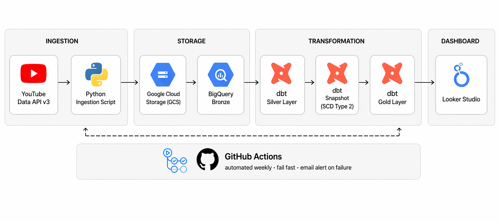
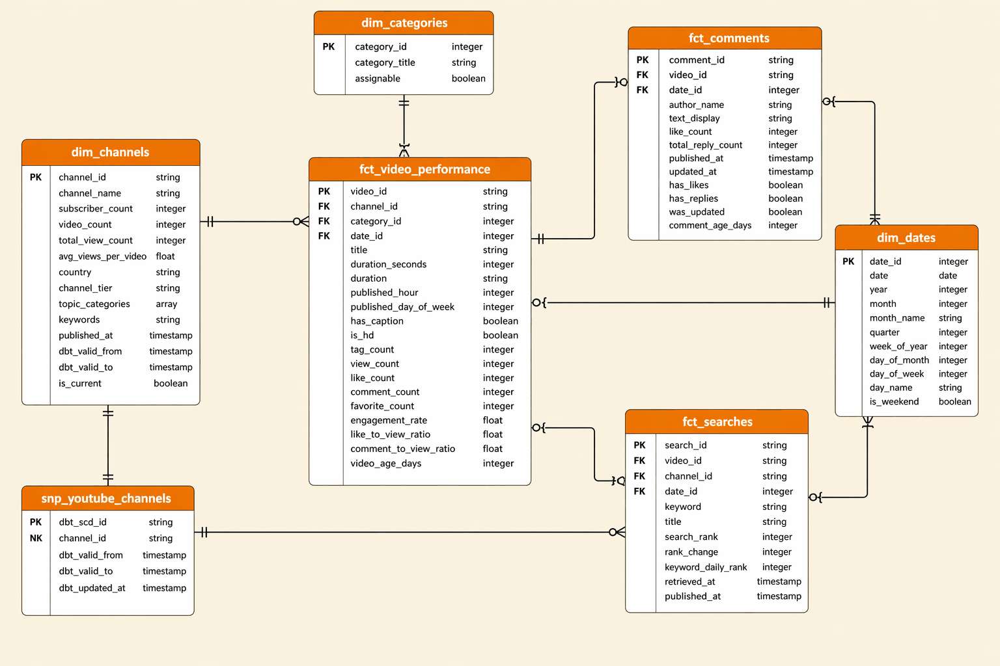
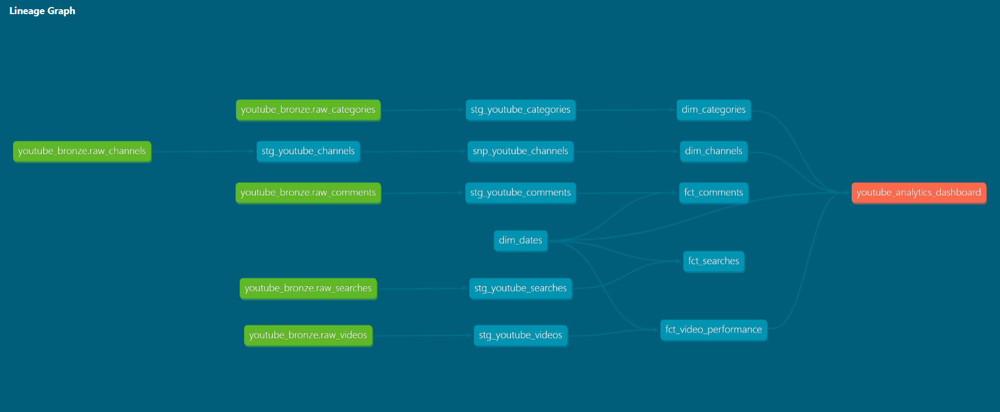
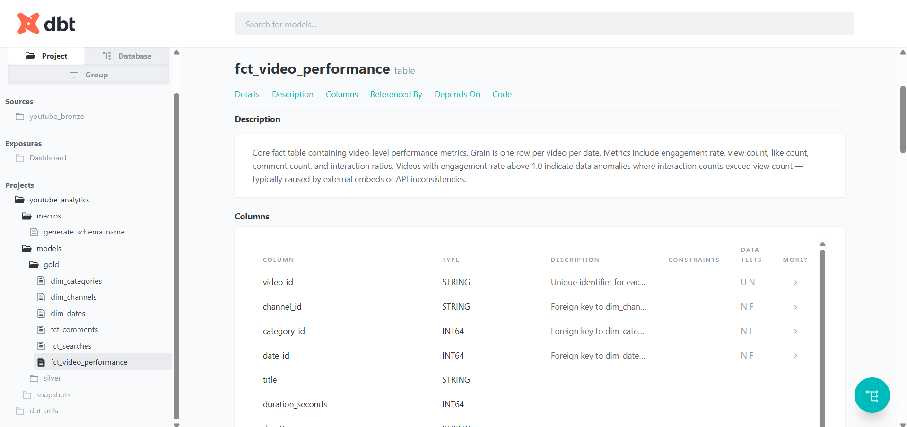

YouTube Marketing Analytics Pipeline
An end-to-end pipeline that pulls marketing content data from the YouTube Data API, keeps the raw data in Google Cloud Storage and BigQuery, models it with dbt into a tested star schema, and serves a Looker Studio dashboard. GitHub Actions ran the whole thing on a weekly schedule.
- Data source
- YouTube Data API v3
- Stack
- Python, GCS, BigQuery, dbt
- Schedule
- Weekly, GitHub Actions
- Status
- Paused since July 2026
Overview
The project tracks marketing content on YouTube. It searches 30 marketing keywords, such as content marketing, youtube seo tips and tiktok marketing tips, and collects data from five API endpoints: search results, video details, channel details, comments and video categories.
The aim was to practise the full analytics engineering workflow on real data rather than a static CSV: scheduled ingestion, raw storage, layered dbt models, tests, documentation and a dashboard at the end. The questions behind the dashboard are simple ones: which videos and channels get the most engagement, what those videos have in common, and how channels change over time.
Most of the work is in the dbt layer. The dashboard is mainly there to show that the final tables are accurate and easy to query.
Status: paused. I built the project in April 2026, and it ran on a weekly schedule on a Google Cloud free trial. The last successful run was on 3 June 2026. Once the trial ended, the storage bucket was no longer accessible, so I paused the schedule. The BigQuery tables and the dashboard still show data from that last run.
Architecture
It's an ELT setup. Raw data is loaded first, unchanged, and every transformation happens inside BigQuery with dbt. Data moves through three layers: bronze (raw), silver (cleaned) and gold (modelled for analysis).

Pipeline workflow
The GitHub Actions workflow ran every Wednesday at 3am (Malaysia time), and it can also be started manually. Each run goes through these steps:
- Ingest from the APIA Python script calls the YouTube Data API for each keyword and writes the results to Cloud Storage as newline-delimited JSON, in dated folders (
endpoint/YYYY/MM/DD/). - Load into BigQueryA second script loads the files into bronze tables. These are append-only and partitioned by day. It checks first whether today's data is already there, so a re-run doesn't create duplicates.
- Check source freshness
dbt source freshnessconfirms all five bronze tables were updated recently: a warning after 25 hours, an error after 49. - Build and test silverdbt builds the cleaned staging models and tests them straight away. If a test fails, the run stops here.
- Snapshot channelsA dbt snapshot records any changes to channel details (subscribers, views, video count and so on), keeping the history.
- Build and test golddbt builds the star schema and runs the gold tests. If anything fails along the way, GitHub sends an email alert.
Across the weekly schedule (19 April to 3 June 2026), 11 of 13 runs passed.
Data transformation
Silver: clean, no business logic
The silver models cast types, remove duplicates, filter out nulls and rename columns. They only do simple extractions, such as turning YouTube's ISO 8601 durations (for example PT1H2M3S) into seconds, pulling out the hour a video was published, or counting tags. Anything that counts as a business rule waits until gold.
Gold: a star schema
The gold layer follows Kimball-style dimensional modelling, with three fact tables and three dimension tables:
| Model | Grain | What's in it |
|---|---|---|
| fct_video_performance | One row per video | Engagement rate, like-to-view and comment-to-view ratios, video age |
| fct_comments | One row per comment | Has likes, has replies, was edited, comment age |
| fct_searches | Keyword + video + date | Search rank, rank change, daily keyword rank |
| dim_channels | One row per channel version | Channel tier (Nano / Micro / Macro / Mega), average views per video, built from the snapshot |
| dim_categories | One row per category | YouTube category names |
| dim_dates | One row per day | Date spine from 2005 to 2030 with week, month, quarter and weekend flag |
Tracking history with SCD Type 2
Subscriber counts and other channel figures change over time. Instead of overwriting them, a dbt snapshot stores a new version of a channel whenever one of the tracked columns changes. dim_channels marks the latest version with is_current, so you can report current figures or look at growth over time.
The dashboard uses fct_video_performance and the dimensions. fct_comments and fct_searches are fully built and tested, but they aren't on the dashboard yet.


Data quality
Tests are defined in dbt and run as part of every pipeline run. On the last successful run (3 June 2026), all 56 tests passed and all five sources were fresh.
| Check | Where it's applied |
|---|---|
| unique + not_null | Every primary key in silver and gold |
| not_null | Important foreign keys |
| accepted_values | is_hd, assignable, channel_tier |
| relationships | Every foreign key in gold points to an existing row in its dimension |
| source freshness | All 5 bronze tables (warn at 25 hours, error at 49) |
Every model and column is documented in dbt, including known quirks in the data. For example, engagement_rate can be above 1 for some videos, which comes from external embeds.

Dashboard
The Looker Studio dashboard reads from the gold tables and has three pages:
- Market landscape: how many videos and channels are tracked, average engagement, the most watched channels and the content categories with the highest engagement.
- Video performance: what drives engagement on individual videos.
- Channel intelligence: how the channels behind those videos compare.
The joins between facts and dimensions for the dashboard are done as a blend in Looker Studio, not as an extra dbt model (see Technical decisions).

Technical decisions
ELT instead of ETL
Raw data lands in Cloud Storage and BigQuery before anything changes it, so it can always be reprocessed if a transformation rule changes.
Append-only bronze
Bronze tables are never updated or deleted from. Each run adds a new day partition, and a duplicate check stops the same day being loaded twice.
Dated folders and NDJSON
The YYYY/MM/DD folders match BigQuery's day partitions, which makes reprocessing a single day simple. NDJSON loads straight into BigQuery.
Fail fast
Freshness checks and silver tests run before gold is built, so bad data stops the run instead of reaching the tables the dashboard reads.
Star schema over one big table
Separate facts and dimensions keep the dbt models clean, testable and reusable in other BI tools. The wide join the dashboard needs is a Looker Studio blend. The trade-off: that blend logic isn't version-controlled in dbt, which I accepted for a project this size.
SAFE_DIVIDE for every ratio
Ratios like engagement rate return NULL instead of failing when a video has zero views.
Code highlights
A few short excerpts from the repository. The full code, setup steps and documentation are on GitHub.
Not loading the same day twice
Full fileBefore loading, the script checks whether today's partition already has data. If it does, it skips that table, so running the pipeline again doesn't create duplicates.
ingestion/load_gcs_to_bigquery.py · Python
check_query = f"""
SELECT COUNT(*) as count
FROM `{table_id}`
WHERE DATE(_PARTITIONTIME) = CURRENT_DATE()
"""
result = client.query(check_query).result()
count = next(result).count
if count > 0:
print(f"Skipping {table_name} - already loaded today")
continue
load_job = client.load_table_from_uri(gcs_uri, table_id, job_config=job_config)Parsing YouTube durations in the silver layer
Full fileThe API returns durations like PT1H2M3S. This turns them into seconds, along with other simple extractions such as publish hour, caption and HD flags, and tag count.
models/silver/stg_youtube_videos.sql · SQL (dbt)
EXTRACT(HOUR FROM published_at) AS published_hour,
EXTRACT(DAYOFWEEK FROM published_at) AS published_day_of_week,
CAST(caption AS BOOLEAN) AS has_caption,
LOWER(definition) = 'hd' AS is_hd,
ARRAY_LENGTH(tags) AS tag_count,
(COALESCE(CAST(REGEXP_EXTRACT(duration, r'(\d+)H') AS INT64), 0) * 3600) +
(COALESCE(CAST(REGEXP_EXTRACT(duration, r'(\d+)M') AS INT64), 0) * 60) +
(COALESCE(CAST(REGEXP_EXTRACT(duration, r'(\d+)S') AS INT64), 0))
AS duration_secondsEngagement metrics in the gold layer
Full fileEngagement rate is (likes + comments) ÷ views. SAFE_DIVIDE returns NULL instead of an error when views are zero.
models/gold/fct_video_performance.sql · SQL (dbt)
SAFE_DIVIDE(
videos.like_count + videos.comment_count,
videos.view_count
) AS engagement_rate,
SAFE_DIVIDE(
videos.like_count,
videos.view_count
) AS like_to_view_ratio,
DATE_DIFF(
CURRENT_DATE(),
DATE(videos.published_at),
DAY
) AS video_age_daysChannel history with a dbt snapshot
Full fileWith the check strategy, dbt compares these columns on each run and saves a new version of the channel when any of them change.
snapshots/snp_youtube_channels.sql · dbt snapshot
{% snapshot snp_youtube_channels %}
{{
config(
unique_key='channel_id',
strategy='check',
check_cols=[
'subscriber_count',
'video_count',
'total_view_count',
'channel_name',
'country',
'keywords'
],
)
}}
SELECT * FROM {{ ref('stg_youtube_channels') }}
{% endsnapshot %}Order of the dbt steps in GitHub Actions
Full fileFreshness, then silver build and tests, then the snapshot, then gold. A failure at any step stops the run and triggers the email step.
.github/workflows/youtube_pipeline.yml · GitHub Actions (excerpt)
- name: dbt source freshness
run: dbt source freshness
- name: dbt run silver
run: dbt run -s silver
- name: dbt test silver # fail fast
run: dbt test -s silver
- name: dbt snapshot
run: dbt snapshot
- name: dbt run gold
run: dbt run -s gold
- name: dbt test gold
run: dbt test -s gold
- name: Send failure email
if: failure()